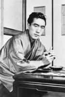

(1925 – 1970)

Japon edebiyatının hırçın çocuğu Yukio Mishima bir yandan ülkesinin Batılı değerlere teslim olmasına isyan ediyor, bir yandan da ulusal kökenlere sahip çıkmayı öğütleyen kitaplar yazıyordu. Son derece verimli bir yazar olan Mishima; kısa yaşamına yirmi roman, yüz kırk üç öykü, elli iki oyun ve yüzlerce makale sığdırdı.
Asıl adı Kimitake Hiraoka olan Yukio Mishima (okunuşu: Yukio Mişima), 14 Ocak 1925 tarihinde Tokyo'da doğdu. Babası Asuza memur, annesi Shizue ev kadınıydı. Yazarın çocukluğunun ilk dönemi, onu yakın çevresinden uzak büyüten büyükannesi Natsu'nun gölgesi altında geçti. Aristokrat bir adamın gayrimeşru kızı olan büyükannesi; Mishima'nın sokağa çıkmasına, diğer erkek çocuklarıyla oynamasına müsaade etmiyor, sadece kız kuzenleri ve bebekleriyle oynamasını istiyordu. Natsu, Tokugava dönemi samuraylarıyla ilişkili bir aileden gelmekteydi ve Mishima'nın büyükbabası ile evlendikten sonra bile ailenin aristokratik geleneklerini sürdürmeye devam etmişti. Büyükbabası bir bürokrattı ve işleri sömürge döneminde açılmıştı.
Mishima, ailesinin yanına ancak on iki yaşında dönebildi ve annesiyle yakın ilişkisi, biyografisini yazan kimi yazarlar tarafından ensestliğe yakın bir ilişki olarak tasvir edildi. Babası askeri disiplinden keyif alan sert bir adamdı. Oğlunun edebiyatla ilgilenmesine çok kızıyor, yazdıklarını bulduğu zaman yırtıp çöpe atıyordu. Mishima'nın okul için yazdığı bir öykü, öğretmenlerini o kadar etkiledi ki yayımlanması için dönemin ünlü edebiyat dergisi Bungei Bunka'ya gönderdiler. Yazı çocuğun arkadaşlarından kıskançlık tepkileri görmemesi için "Yukio Mishima" takma adıyla gönderilmişti ve bu adı, yazarın sonraki kariyeri boyunca da kullanıldı.
II. Dünya Savaşı başlayacağı sırada askere çağrılan ve o günlerde nezle olan Mishima, doktorlara verem olduğunu söyleyerek askere gönderilmekten kurtuldu. 1946'da ünlü yazar Yasunari Kawabata ile tanışan yazar, onun önerisiyle bazı öykülerini dergilerde bastırdı. 1947 yılında Tokyo Üniversitesi'nden mezun olan yazar, Maliye Bakanlığı'nda memur olarak işe başladıysa da o kadar ısrar etti ki sonunda babası bile memurluğu bırakıp yazar olmasına razı oldu.
1948'de ilk romanı Hırsızlar'ı yayımlayan Mishima, asıl ününü 1949'da yayımlanan Bir Maskenin İtirafları adlı romanıyla elde etti. Eşcinsel bir gencin topluma uyum sağlamak için kendini saklamasını anlatan roman, çok kısa sürede Mishima'yı Japonya'nın en ünlü yazarlarından biri yaptı. Bu romanın ardından Mishima, yazmaya çok daha fazla zaman ayırmaya başladı ve Japon edebiyatının en verimli yazarlarından biri oldu.
Aynı zamanda sinemayla da çok yakından ilgilenen Yukio Mishima, 1960'lı yıllarda çeşitli filmlerde önemli roller oynadı. Eşcinsel eğilimleri açıkça bilinmesine rağmen 1958'de Yoko Sugiyama ile evlenen yazarın iki çocuğu oldu.
Mishima Japonya'nın modernleşmesine ve geleneksel değerlerini yitirmesine karşı sert bir muhalefet tavrı gösterdi ve samuray değerlerini savundu. 1968'de Tatenokai (Kalkan Derneği) adlı bir birlik kuran Mishima buraya genç delikanlıları almaya ve onlara dövüş sanatlarını öğretmeye başladı. Amaçları onların gözünde Japonya'nın simgesi olan İmparator'u gerektiği zaman savunmaktı.
25 Kasım 1970'te, Mishima ve beraberindeki dört Tatenokai üyesi, Japonya Silahlı Kuvvetleri'nin Tokyo'daki Ichigaya Kampı'na gitti. Burada komutanı sandalyesine bağlayan ve İmparator'un haklarının yeniden tahsis edilmesi için hazırladıkları manifestoyu ve taleplerini okuyan Mishima, balkona çıktı ve aşağıdaki askerlere askeri darbe yapma çağrısında bulundu. Ciddiye alınmaması hatta dalga geçilmesi üzerine grubun yanına dönen Yukio Mishima, "seppuku" (geleneksel Japon intihar biçimi – 'harakiri' sözcüğü aslında hoş karşılanmamaktadır) yaparak intihar etti ve Tatenokai üyelerinden Hiroyasu Koga, intiharın tamamlanması için Mishima'nın başını kılıçla kesti.
Mishima çok yönlü bir yazardı. Romanları haricinde popüler dizi romanlar, kısa hikayeler, edebi denemeler, Kabuki tiyatro oyunları, geleneksel No drama tiyatrosunun modern versiyonlarıyla ilgili oyunlar da kaleme almıştı.
Seçme Romanları: Bir Maskenin İtirafları (1948), Yasak Renkler (1953), Dalgaların Sesi (1954), Şölenden Sonra (1960), Denizi Yitiren Denizci (1963), İpek ve Sezgi (1964), Şafak Tapınağı (1970), Meleğin Çürüyüşü (1971)